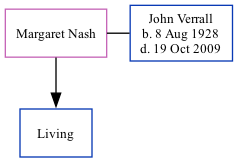

Margaret J Verrall (née Nash)
[ Home ] | [ Calendar ] | [ Surnames Index ] | [ Family History ]Margaret Nash, the wife of John Leslie Verrall (the first cousin once-removed on the father's side of Nigel Horne), and married John (with whom she had 1 surviving child) in Thanet, Kent, England around Aug 19531 (Jul/Aug/Sep).
Citations
- England & Wales, Marriage Index: 1916-2005 Online publication - Provo, UT, USA: The Generations Network, Inc., 2009.Original data - General Register Office. England and Wales Civil Registration Indexes. London, England: General Register Office. © Crown copyright. Published by permission of the Cont
Media
England & Wales marriages 1837-2008 Transcription - BMD-M-1953-3-AZ-001693-112
Family Tree
Generated by ged2site. Last updated on Nov 13, 2024